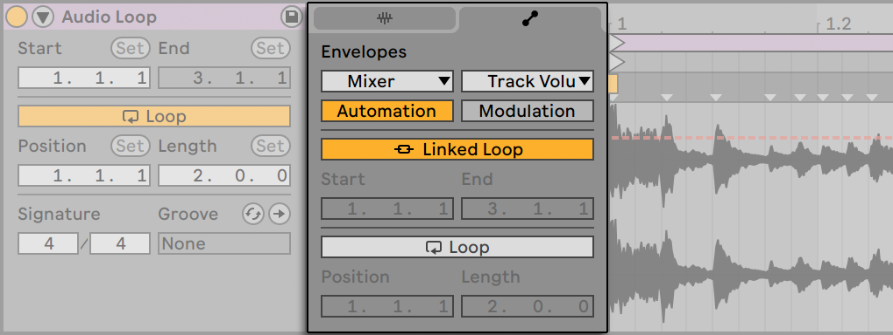
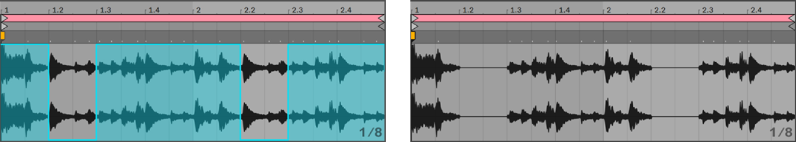
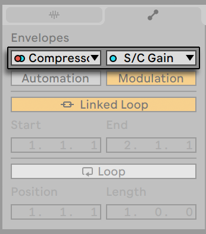
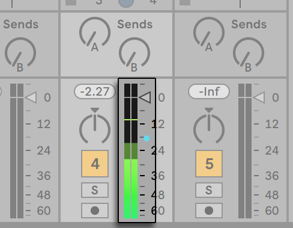
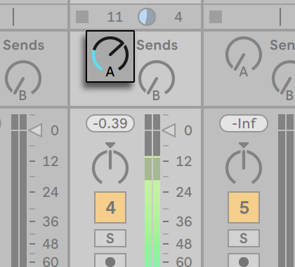
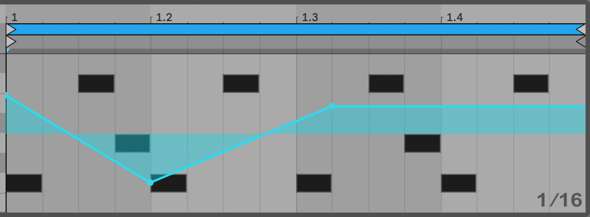
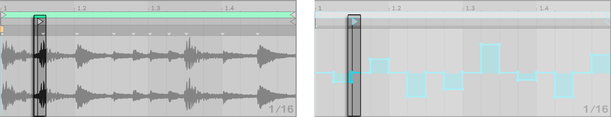
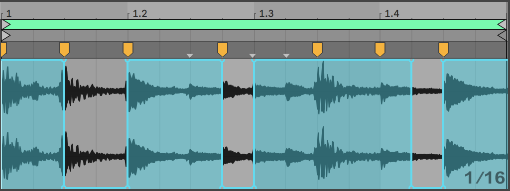

26. Clip Envelopes
Every clip in Live can have its own clip envelopes. The aspects of a clip that are influenced by clip envelopes change depending upon clip type and setup; clip envelopes can do anything from representing MIDI controller data to automating or modulating device parameters. In this chapter, we will first look at how all clip envelopes are drawn and edited, and then get into the details of their various applications.
26.1 The Clip Envelope Editor
To work with clip envelopes, open up the Clip View’s Envelopes tab by clicking the tab header with the  icon in the Clip View. The Envelopes tab contains two choosers for selecting an envelope to view and edit.
icon in the Clip View. The Envelopes tab contains two choosers for selecting an envelope to view and edit.

The left-hand side menu is the Device chooser, which selects a general category of controls with which to work. Device chooser entries are different for different kinds of clips:
- Audio clips have entries for “Clip” (the clip’s sample controls), every effect in the track’s device chain, and the mixer.
- MIDI clips have entries for “MIDI Ctrl“ (MIDI controller data), every device in the track’s device chain, and the mixer.
The right-hand side menu, the Control chooser, selects among the controls of the item chosen in the Device chooser menu. In both choosers, parameters with altered clip envelopes appear with LEDs next to their names. You can simplify the appearance of these choosers by selecting “Only show adjusted envelopes” from either of them.
When a Session clip is selected in Clip View, two toggles are available below the Device and Control choosers: Automation and Modulation. You can use these to switch between automating and modulating device and mixer parameters. Note that for Arrangement clips, these toggles are not shown as only clip envelope modulation is possible in Clip View. Adding automation envelopes to Arrangement clips is done on a track’s automation lane.
The techniques for drawing and editing clip envelopes are the same as those for automation envelopes in the Arrangement View. Please see Recording Automation in Session View for information on recording Session View automation.
To delete a clip envelope (i.e., to set it back to its default value), right-click in the Clip View’s Envelope Editor or press the CtrlBackspace (Win) / CmdDelete (Mac) shortcut keys to open its context menu and select Clear Envelope.
To automatically reset certain MIDI control messages at the start of a new clip, select the “MIDI Envelope Auto-Reset” entry from the Options menu or the context menu in the Sample Editor.
Let us now look at some uses of clip envelopes.
26.2 Audio Clip Envelopes
Clip envelopes extend Live’s “elastic“ approach to audio and, in conjunction with Live’s audio effects, turn Live into a mighty sound-design tool. Using clip envelopes with audio clips, you can create an abundance of interesting variations from the same clip in real time — anything from subtle corrections to entirely new and unrelated sounds.
26.2.1 Clip Envelopes are Non-Destructive
Using clip envelopes, you can create new sounds from a sample without actually affecting the sample on disk. Because Live calculates the envelope modulations in real time, you can have hundreds of clips in a Live Set that all sound different, but use the same sample.
You can, of course, export a newly created sound by rendering, or by resampling. In the Arrangement View, you can use the Consolidate command to create new samples.
26.2.2 Changing Pitch and Tuning per Note
Drop a sample loop from the browser into Live, make sure the Warp switch is enabled, and then play the clip. Select “Clip” in the Device chooser and “Transposition” in the Control chooser. You can now alter the pitch transposition of individual notes in the sample as you listen to it.
The fast way to do this is by enabling Draw Mode and drawing steps along the grid. Deactivate Draw Mode to edit breakpoints and line segments. This is useful for smoothing the coarse steps by horizontally displacing breakpoints.
Note that the warp settings determine how accurately Live’s time-warping engine tracks the envelope shape. To obtain a more immediate response, reduce the Grain Size value in Tones or Texture Mode, or choose a smaller value for the Granulation Resolution in Beats Mode.
To correct the tuning of individual notes in the sample, hold down the Shift modifier while drawing or moving breakpoints to obtain a finer resolution.
To scroll the display, hold down the CtrlAlt (Win) / CmdOption (Mac) modifier while dragging.
Pitch is modulated in an additive way. The output of the transposition envelope is simply added to the Transpose control’s value. The result of the modulation is clipped to stay in the available range (-48..48 semitones in this case).
26.2.3 Muting or Attenuating Notes in a Sample
Select “Clip” in the Device chooser and “Gain” in the Control chooser. By drawing steps in Draw Mode or creating shapes with breakpoints, you can impose an arbitrary volume shape onto the sample.

The volume envelope’s output is interpreted as a relative percentage of the Clip Gain slider’s current value. The result of the clip envelope’s modulation can therefore never exceed the absolute volume setting, but the clip envelope can drag the audible volume down to silence.
26.2.4 Scrambling Beats
One very creative use of clip envelopes is to modulate the sample offset. Sample offset modulation makes the most sense for rhythmical samples, and is only available for clips that are set up to run in the Beats Warp Mode.
Try sample offset modulation with a one-bar drum loop: Make sure Beats Mode is chosen; in the Envelopes tab, choose “Clip“ from the Device chooser and “Sample Offset“ from the Control chooser. The Envelope Editor appears with a vertical grid overlay. In envelope Draw Mode, set steps to non-zero values to hear the loop scrambled. What is going on?
Imagine the audio is read out by a tape head, the position of which is modulated by the envelope. The higher a value the envelope delivers, the farther away the tape head is from its center position. Positive envelope values move the head towards the “future,“ negative values move it towards the “past.“ Fortunately, Live performs the modulation in beats rather than centimeters: A vertical grid line is worth a sixteenth note of offset and the modulation can reach from plus eight sixteenths to minus eight sixteenths.
Sample offset modulation is the tool of choice for quickly creating interesting variations of beat loops. We discourage using this technique for “analytical“ cut-and-splice tasks; they are much easier to perform using Live’s Arrangement View, and the results can easily be consolidated into new clips.

Some sample offset envelope gestures have a characteristic effect: a downward “escalator“ shape, for instance, effectively repeats the step at the envelope’s beginning. Similarly, a smooth ramp with a downwards slope is slowing time and can create nice slurring effects when the slope is not quite exactly 45 degrees; try this with a 1/32 Granulation Resolution.
26.2.5 Using Clips as Templates
As you are making creative use of clip envelopes, the clips containing them develop a life of their own, independent of the original sample. You might wonder at a point: What does this clip sound like with a different sample? This is easy to find out by selecting the clip so that it is displayed in the Clip View and dragging the desired sample from the browser, or the Session or Arrangement View, onto the Clip View. All clip settings, including the envelopes, will remain unaltered; only the sample will be replaced.
26.3 Mixer and Device Clip Envelopes
Clip envelopes can be used to automate or modulate mixer and device controls. Since mixer and device controls can potentially be controlled by both types of envelopes at the same time (and also by the Arrangement’s automation envelopes, this is a potential source of confusion. However, modulation envelopes differ from automation envelopes in one important way: Whereas automation envelopes define the absolute value of a control at any given point in time, modulation envelopes can only influence this defined value. This difference allows the two types of envelopes to work together in harmony when controlling the same parameter. To help you distinguish between these, automation envelopes are colored in red, whereas modulation envelopes are colored in blue. Additionally, in parameters with knob controls, automation moves the absolute position (or the “needle”), whereas modulation is indicated by the blue segment on the ring.
Imagine that you have recorded volume automation for an audio clip so that it gradually fades out over four bars. What happens to your fade-out when you create a modulation envelope that gradually increases the mixer volume over four bars? At first, your fade-out will become a crescendo, as the modulation envelope gradually increases the volume within the range allowed by the automation envelope. But, once the decreasing automated value meets with the increasing modulation envelope value, the fade-out will begin, as automation forces the absolute control value (and the operable range of the modulation envelope) down.
Both automation and modulation clip envelopes are available for clips in the Session View. A toggle beneath the envelope choosers allows you to switch between editing automation and modulation clip envelopes for the selected parameter. In the Arrangement, clips only have modulation envelopes, while the automation envelopes reside on the track’s automation lane.

In a clip, parameters that have an automation envelope are indicated by a red LED in the Control chooser. Similarly, parameters that have a modulation envelope are indicated by a blue LED. Some parameters may have both red and blue LEDs, indicating that they are being automated and modulated by the clip.

26.3.1 Modulating Mixer Volumes and Sends
Notice that there are actually two modulation envelopes that affect volume: Clip Gain and Track Volume. The latter is a modulation for the mixer’s gain stage and therefore affects the post-effect signal. To prevent confusion, a small dot below the mixer’s volume slider thumb indicates the actual, modulated volume setting.

As you raise and lower the Volume slider, you can observe the dot following your movement in a relative fashion.
Modulating the track’s Send controls is just as easy. Again, the modulation is a relative percentage: The clip envelope cannot open the send further than the Send knob, but it can reduce the actual send value to minus infinite dB.

26.3.2 Modulating Pan
The Pan modulation envelope affects the mixer pan stage in a relative way: The pan knob’s position determines the intensity of the modulation. With the pan knob set to the center position, modulation by the clip envelope can reach from hard left to hard right; the modulation amount is automatically reduced as you move the pan knob towards the left or right. When the pan knob is turned all the way to the left, for instance, the pan modulation clip envelope has no effect at all.
26.3.3 Modulating Device Controls
All devices in a clip’s track are listed in the Device chooser. Modulating device parameters works similarly to modulating mixer controls. When modulating device controls, it is important to keep in mind the interaction between modulation and automation envelopes: unlike a device preset, the clip envelope cannot define the values for the devices’ controls, it can only change them relative to their current setting.
26.4 MIDI Controller Clip Envelopes
Whether you are working with a new MIDI clip that was recorded directly into Live, or one from your files, Live allows you to edit and create MIDI controller data for the clip in the form of clip envelopes.
Choose “MIDI Ctrl“ from a MIDI clip’s Device chooser and use the Control chooser next to it to select a specific MIDI controller. You can create new clip envelopes for any of the listed controllers by drawing steps or using breakpoints. You can also edit clip envelope representations of controller data that is imported as part of your MIDI files or is created while recording new clips: names of controllers that already have clip envelopes appear with an adjacent LED in the Control chooser.
Live supports most MIDI controller numbers up to 119, accessible via the scroll bar on the right side of the menu. Note that devices to which you send your MIDI controller messages may not follow the conventions of MIDI control assignments, so that “Pitch Bend“ or “Pan,“ for example, will not always achieve the results that their names imply.

Many of the techniques described in the following section on unlinking a clip envelope from its associated clip can be adapted for use with MIDI controller clip envelopes.
26.5 Unlinking Clip Envelopes From Clips
A clip envelope can have its own local loop/region settings. The ability to unlink the envelope from its clip creates an abundance of exciting creative options, some of which we will present in the rest of this chapter.
26.5.1 Programming a Fade-Out for a Live Set
Let us start with a straightforward example. Suppose you are setting up a Live Set and wish to program a fade-out over eight bars to occur when a specific audio clip is launched — but all you have is a one-bar loop.

- Choose the Clip Gain or Mixer Track Volume envelope, and unlink it from the sample.
- The clip envelope’s loop braces now appear colored to indicate this envelope now has its own local loop/region settings. The loop/region controls in the Envelopes tab “come to life.“ If you toggle the envelope’s Loop switch, you’ll notice the Clip tab/panel’s Loop switch is not affected. The sample will keep looping although the envelope is now playing as a “one-shot.”
- Type “8“ into the leftmost envelope loop-length value box.
- Zoom the envelope display out all the way by clicking on the Envelope’s time ruler and dragging upwards.
- Insert a breakpoint at the region end and drag it to the bottom.
Now, as you play the clip, you can hear the one-bar loop fading out over eight bars.
26.5.2 Creating Long Loops from Short Loops
Let us take this a step further. For a different part of your set, you would like to use the same one-bar loop — because it sounds great — but its repetition bores you. You would like to somehow turn it into a longer loop.
We depart from the clip we just set up to fade out over eight bars. Activate the clip volume envelope’s Loop switch. Now, as you play the clip, you can hear the eight-bar fade-out repeating. You can draw or edit any envelope to superimpose onto the sample loop. This, of course, not only works for volume but for any other control as well; how about a filter sweep every four bars?
Note that you can create as much time as needed in the Envelope Editor, either by dragging the loop braces beyond the view limit, or by entering values into the numeric region/loop controls.
You can choose an arbitrary loop length for each envelope, including odd lengths like 3.2.1. It is not hard to imagine great complexity (and confusion!) arising from several odd-length envelopes in one clip.

To keep this complexity under control, it is important to have a common point of reference. The start marker identifies the point where sample or envelope playback depart from when the clip starts.
Note that the start/end markers and loop brace are subject to quantization by the zoom-adaptive grid, as is envelope drawing.
26.5.3 Imposing Rhythm Patterns onto Samples
So far, we have been talking about imposing long envelopes onto small loops. You can also think of interesting applications that work the other way around. Consider a sample of a song that is several minutes long. This sample could be played by a clip with a one-bar volume envelope loop. The volume envelope loop now works as a pattern that is repeatedly “punching“ holes into the music so as to, perhaps, remove every third beat. You can certainly think of other parameters that such a pattern could modulate in interesting ways.
26.5.4 Clip Envelopes as LFOs
If you are into sound synthesis, you may want to think of a clip envelope with a local loop as an LFO. This LFO is running in sync with the project tempo, but it is also possible to set up a loop period odd enough to render the envelope unsynchronized. By hiding the grid, you can adjust the clip envelope loop start and end points independently of a meter grid.
The Stretch/Skew Envelope handles and automation shapes provide possibilities for designing creative LFO shapes.
26.5.5 Warping Linked Envelopes
When in Linked mode, clip envelopes respond to changes in the clip’s Warp Markers. This means that moving a warp marker will lengthen or shorten the clip envelope accordingly. Additionally, Warp Markers can be adjusted from within the envelope editor.
